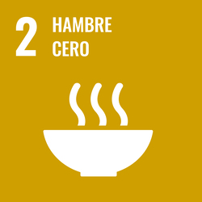
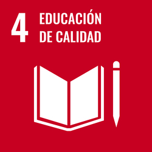

ODS 2: Fome Zero - Posar fi a la fam, aconseguint la seguretat alimentària, millorant la nutrició i promocionant l'agricultura sostenible.

ODS 4: Educació de Qualitat - Garantir una educació inclusiva, equitativa i de qualitat, promoure oportunitats d'aprenentatge al llarg de la vida per a tothom.